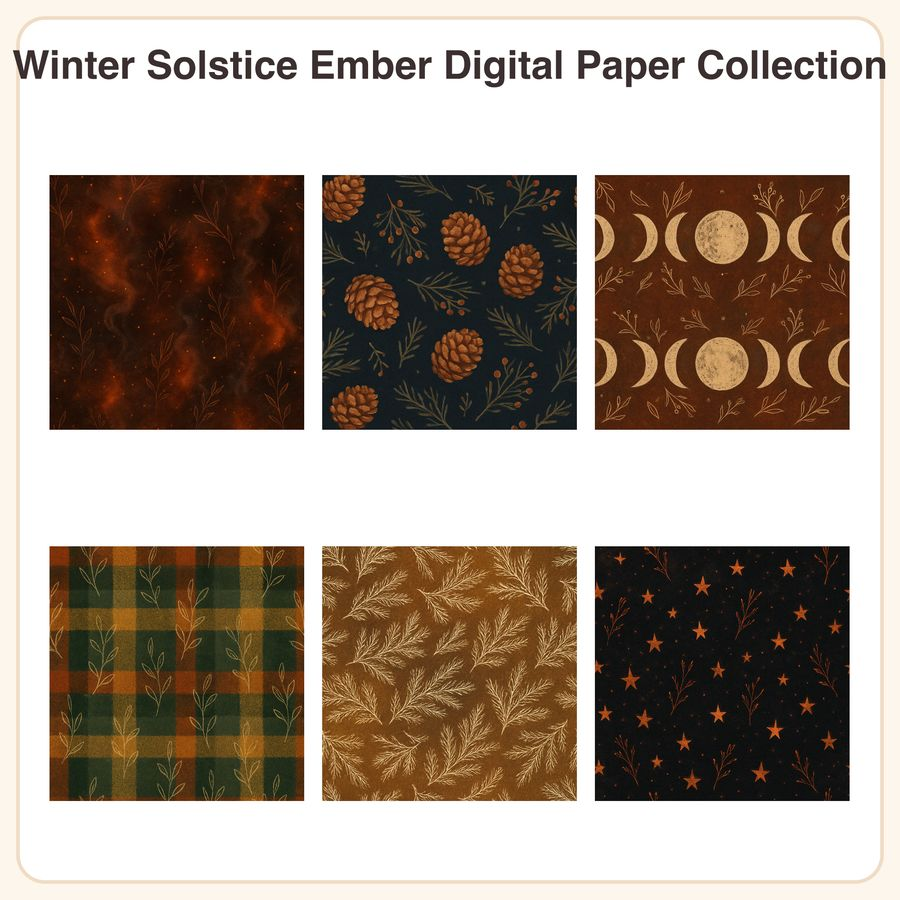

$4.99
View on Etsy🔥 Bring cozy fireside warmth to your winter projects with this moody amber-and-charcoal digital paper pack, inspired by quiet solstice nights. What's included: • 6 seamless patterns, each provided as: - 1 high-res JPEG, 3072x3072px (12x12in @ 256dpi) - 1 repeatable/tileable PNG tile for seamless pattern-making • 12 files total Patterns included: 1. Glowing ember texture with soft smoke wisps 2. Scattered pinecones and juniper sprigs on charcoal linen 3. Hand-drawn moon phase chart in cream ink on umber 4. Cozy woven wool plaid in rust, mustard, and slate 5. Frost-etched pine branches on amber gradient 6. Tiny embered stars on a deep charcoal night sky Style: Painterly textured digital paper with a warm amber-rust-charcoal palette, soft grain overlay, and hand-drawn botanical linework accents. How to use: Perfect for digital scrapbooking, planner and journal backgrounds, printable cards, gift wrap, junk journals, holiday tags, and craft projects. Open in Photoshop, Procreate, Canva, or any program that supports JPEG/PNG files. Tile the PNGs seamlessly for larger backgrounds or wrapping paper. License: For personal and small-business commercial use (up to 500 sold physical/printed items). Please do not resell, redistribute, or share the digital files themselves. Honest disclosure: These designs were created by our shop with the help of AI tools, then refined and prepared for your creative use. Instant digital download — no physical item will be shipped.